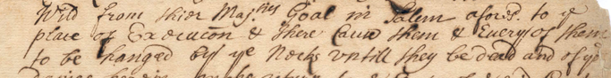
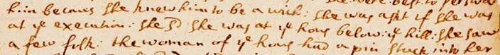

Previously reported in Caroline Newsman,"With UVA's Help, Salem Finally Discovers Where Its 'Witches' Were Executed," UVA Today, January 19, 2016.
The Gallows Hill Project: Confirming the Location of the 1692 Salem Execution SiteBenjamin RayUniversity of VirginiaGallows Hill, the tall, sloping promontory on the western side of the city of Salem, Massachusetts, is familiar to everyone who lives there. For visitors, Gallows Hill is easily identified by the large water tower that stands on top, bearing the city's name as well as the black silhouette of a witch flying on a broomstick. Witchcraft Heights Elementary School is located on the crest of the hill near streets named Witch Way and Witchcraft Road. Until 2016, no one knew exactly where on Gallows Hill the nineteen witch-hunt victims were executed. The site was likely chosen by the High Sherriff of Essex County, twenty-six-year-old George Corwin, but the execution warrants of 1692, signed by the Chief Magistrate William Stoughton, were of no help, referring only to "the place of execution" without further specification. Although the official warrants did not specify the location of the execution site, it was still remembered in the eighteenth century. John Adams visited Gallows Hill, then called Witch Hill, in August 1766 while staying with his brother-in-law Richard Cranch in Salem. Adams noted that locust trees were planted "over the graves" as memorial markers, but his account makes no mention of their location. By the nineteenth century, the location was passing out of memory. Nathaniel Hawthorne, who lived in Salem, visited the area of Gallows Hill in the mid-1800s and made it the setting of his haunting tale "Alice Doane's Appeal." Gallows Hill was still kept as common land in Hawthorne's time and was known as the Great Pasture, used as grazing land for cows and sheep. Here "on the long broad ridge," he wrote, "the eminence formed part of an extensive tract of pasture land, and was traversed by cow paths in various directions." Hawthorne does not mention seeing any locust trees. Although the narrator of "Alice Doane's Appeal" imagines that he might stumble anytime "into the hollow of a witch's grave," he is convinced that all vestiges of the execution site had vanished. In the 1860s, the local historian Charles Upham also assumed that the executions took place at the summit of the hill, in accordance with the popular idea that the very top of the hill, as the most elevated and visible place, was the proper site to execute witches as an act of defiance against the devil. He suggested it was reached by ascending Aborn Street from Boston Street. Although Salem's Essex Institute proposed building a forty-five-foot stone lookout tower atop Gallows Hill in 1892 as a memorial to "the lessons to be learned from the history of the delusion of 1692," the tower's opponents claimed that the history of the witch trials was too shameful to be remembered, and it was voted down. 
In 1911, Salem historian Sidney Perley reported new findings about the location of the site in a talk given to the Essex Institute. Using local family memories, he placed the site lower down on Gallows Hill's northeastern flank, at a place called Proctor's Ledge overlooking Boston Street. The next day, an angry letter to the editor appeared in the Salem newspaper written by Winfield S. Nevins, a local historian who authored several books on the witch trials. He chastised the Institute for hosting Perley's talk, saying that it was "not well founded" and an example of "yellow antiquarianism." He claimed that Charles Upham and other historians were correct decades ago in locating the execution site at the top of the hill. Nevins himself, also citing local family memories, placed the site at the end of Nichols Street, which runs from Boston Street to the top of the hill not far from where the water tower stands today. Nevins died in 1920, and Perley published a fully illustrated account of his theory, which located the execution site at Proctor's Ledge, in the Essex Institute Historical Collections the following year. The name Proctor's Ledge refers to its eighteenth-century owner, Thorndike Proctor, grandson of the now-famous John Proctor who was executed at the site. Thorndike owned a house on the site that he rented out to boarders. This location lies between today's Pope Street and Proctor Street. Here, Perley believed, the hangings took place, and he created a detailed map showing his findings. The City of Salem agreed with Perley's conclusions and purchased two small plots of land on Proctor's Ledge for the placement of a "witch memorial" in 1936. But the city eventually lost interest, and none was built. 
Perley's evidence was based on family traditions associated with several houses on Boston, Federal, and North Streets. Despite the useful geographic information in the family accounts, Perley's case needed documentary support. Recognizing this, local historian Marilynne Roach searched the dozens of court records for geographic references. She found one in the examination record of fifty-one-year-old Rebecca Eames, who was examined in the Salem court on August 19, 1692. According to the record, a magistrate asked her if she was "at the execution" that took place earlier in the morning on Gallows Hill. Having been accused of afflicting a local man with a mysterious illness, she had traveled that morning under guard from her home in Boxford, Massachusetts, to the Salem courthouse along Boston Street. Her guards apparently stopped at one of the houses along the road to view the executions taking place on the hillside above, which were attended by a large crowd. Eames told the court that she was "at the house below the hill" and that she "saw a few folk," referring to the crowd of spectators. This contemporary eyewitness account confirmed Perley's case for Proctor's Ledge, which was clearly visible from Boston Street. There were only a few houses on this section of Boston Street at the time of the executions. All had a view of Proctor's Ledge, and Perley believed that Eames was most likely referring to the McCarter house at 19 Boston Street. Perley visited the house in 1901 and estimated that it stood no more than 200 yards from Proctor's Ledge, which could be easily seen from the windows. The house sold at a significant loss less than two months after Eames viewed the executions, and Perley wondered if that had to do with the family's anxiety surrounding the executions that had taken place behind their home. The examination record also says that McCarter's wife had a pin stuck in her foot, and Eames was asked if she was responsible, but "she s'd she did not doe it." Interestingly, in 1724, the house sold to Thorndike Proctor. Although the documentary evidence from Eames's examination record was convincing—indeed, Roach's report about the Eames document made front-page news—the city took no steps toward placing a marker or memorial on Proctor's Ledge. In 1963, Historic Salem, Inc. proposed putting an obelisk on Proctor's Ledge as a suitable marker, but it never materialized. Finally, in 2010, Elizabeth Peterson, manager of the City of Salem's Witch House museum, called upon several scholars to form a research team called the Gallows Hill Project. Their purpose was to reexamine and confirm Perley's theory and recommend the city follow through with a commemorative marker for the site at Proctor's Ledge. The members of the project were Professor Emerson (Tad) Baker, Department of History, Salem State University; local historian and author Marilynne Roach; Professor Peter Sablock, Department of Geology, Salem State University; filmmaker Tom Phillips; and Professor Benjamin Ray, Department of Religious Studies, University of Virginia. In 1992, the city had constructed a memorial in downtown Salem next to the old Charter Street cemetery. Now, the plan was to commemorate the actual site of the executions. This led Ray, Roach, and Phillips to pay a visit to Tom Brophy, a retired Salem fireman and long-time resident of 25 Proctor Street, whose backyard gave access to Proctor's Ledge. As a child, Brophy was told by family members that the area behind his house on Proctor Street would one day become very important—"the place where the witches were hanged," he was told. Brophy indicated that the area a few yards beyond his backyard was, in accordance with Perley's large-scale map, the execution site. He had a copy of Perley's map of Salem showing the location. In that area were also several tall locust trees. Tom Phillips filmed an interview with Brophy in his backyard. 
An immediate concern for the Project was the question of whether any burial remains might be found in the crevices on the ledge; if there were, they would need to be protected before public announcement of the site. According to Robert Calef's eyewitness account, some of the bodies had been carelessly dumped near the execution site into "a Hole, or Grave, between the Rocks, about two feet deep." Today, such crevices are not visible on the surface, except for one large crevice that had been fully excavated in the late nineteenth century for garden soil. Nothing had been found in the excavation. Were there any other crevices deep enough for temporary burials? Peter Sablock of the Geology Department at Salem State University, assisted by his students, carried out an extensive survey of the sub-surface area on the ledge to locate any holes or crevices and determine their depth. 
In addition to shallow crevices below the surface, Sablock's team also found one or two that might have been large enough to accommodate a couple of human bodies, as Calef observed. The Buffum family lived on Boston Street across from the McCarter house, and, according to family history, Joshua Buffum helped convey the bodies of Rebecca Nurse, John Proctor, and George Jacobs to rowboats in the North River below the ledge so they could be taken to their family properties for burial. It is said that Joshua also helped other families recover the bodies of their loved ones. Given the hot summer of 1692, families undoubtedly wanted to take care of their dead as quickly as possible. It is unknown how many corpses might have been left at the site, and whether they would have survived for 300 years so near the surface is highly doubtful. Two centuries later, the soil on the ledge also became highly contaminated from the chemical fumes produced by leather tannery shops that stood below the ledge in the early 1900s. In 2016, household trash and beer cans also littered the area, and neighbors mentioned that the place had become a refuge for young people's parties. Sablock's team decided not to excavate any of the crevices out of respect. Today, there is still a clear view from the site of the McCarter house at 19 Boston Street—now a laundromat—across parking lots toward Proctor's Ledge. Tall trees that now stand around the area of Proctor's Ledge and Pope Street have made it impossible to see the ledge itself, but a topographical viewshed map of the area would show whether the terrain, in the absence of trees, allowed the ledge to be seen from any of the houses on Boston Street, particularly from the McCarter house, where Perley suggested Rebecca Eames saw the crowd at the executions. In 2015, Ben Ray asked Chris Gist, the geographic information systems (GIS) specialist at the University of Virginia Scholars' Lab, to create a viewshed map of the area. The topographical viewshed map would show which part of the ledge would have been visible from 19 Boston Street or any of the nearby houses. Ray's question to Gist was, "Could we be certain that Rebecca Eames could see the executions from 'the house below the hill,' as she testified, or from any of the other nearby houses?" We also wanted to assess the accuracy of Perley's hand-drawn maps. GIS viewshed mapping was the best way to tackle these questions. 


Gist's viewshed presentation confirmed that anyone standing at or near the Boston Street houses would have had an unobstructed view of the front section of Proctor's Ledge in the absence of today's trees. The viewshed map also confirmed that the top of the hill, where Upham and Hawthorne believed the executions occurred, was not visible from this area. Across the road from 19 Boston Street was the Joshua Buffum house, and farther north was the John Symond house, from which the executions had also been seen. This site is now the Shell Service Station at 111 North Street, which also provides a clear view of Gallows Hill. Today, the top of Proctor's Ledge overlooks the back of a defunct Walgreens Pharmacy. The colored drawing of Gallows Hill below shows that it was still open pastureland in the nineteenth century. 
The final question concerns the pathway taken by the procession of prisoners and spectators as they moved from Salem's prison to Proctor's Ledge. Perley indicates that the prisoners were taken by oxcart from the jail on Prison Street (now St. Peter's Street). As the cart proceeded, it took the prisoners along Main Street (now Essex Street) and then turned north onto Bridge Street, where it continued down toward Town Bridge and crossed over the North River. In 1853, Nathaniel Hawthorne imagined this somber procession as it passed along Main Street in Salem. He portrayed the Reverend George Burroughs, pastor of a small parish in Wells, Maine, and a former minister of Salem Village, who was among the condemned. Referring to Burroughs, the narrator comments: Who would not say, while we see him offering comfort to the weak and aged partners of his horrible crime, -- while we hear his ejaculations of prayer, that seem to bubble up out of the depths of his heart, and fly heavenward, unawares, -- while we behold a radiance brightening on his features as from the other world, which is but a few steps off, -- who would not say, that, over the dusty track of the Main-street, a Christian saint is now going to a martyr's death? The road over Town Bridge, today's Boston Street, provided the only access to the lower slope of Gallows Hill, which is relatively steep and craggy in places and would have caused difficulties for the oxcart carrying the prisoners, as described in a contemporary account. The hilly pasture was common land and located outside the Salem residential area. Since no one owned the property, this uninhabited area beyond the city limits was suitable for the execution of individuals whose presence was considered an abomination. After crossing the bridge, the oxcart would have turned left and proceeded up the northeastern slope, following the cow paths along the edge of Bickford's Pond, which is now filled in, and up the slope to the area that later became known as Proctor's Ledge. The final progress to the top of the ledge was also fairly steep; Robert Calef's contemporary account mentions that the oxcart's wheel became stuck at this point on the rocky surface, while another eyewitness recorded that the oxcart was "for some time at a sett" because of the steepness of the ascent and outcrops of ledge along the path. The same rough surface is visible today and no doubt the reason why the oxcart with the prisoners could not ascend higher. There exist several contemporary reports of the scene of the executions. There is also the unrecorded but legendary exchange between Sarah Good and the Reverend Nicholas Noyes, Assistant Pastor of the First Church in Salem, at the time of Good's execution: "Mr. Noyes urged Sarah Good to Confess, and told her she was a witch, and she knew she was a Witch, to which she replied, 'you are a lier; I am no more a Witch than you are a Wizard, and if you take away my Life, God will give you Blood to drink.'" Noyes died twenty-five years later while supposedly choking on his own blood, an incident that Hawthorne adapted in The House of Seven Gables. Calef reported that the crowd of onlookers mocked the prisoners as they were brought to Proctor's Ledge for execution. On September 22, when the oxcart with its heavy load of eight prisoners became stuck going up the hill, "the afflicted and others said, that the Devil hindred it." On the same day, Samuel Wardwell, one of the condemned, spoke to the crowd and attempted to declare his innocence. He choked on smoke from the executioner's pipe, and the "accusers said, the Devil hindered him with smoke." Afterward, Nicholas Noyes was heard to say, "what a sad thing it is to see Eight Firebrands of Hell hanging there." Thomas Brattle summarized what he saw or was told about the behavior of some of the prisoners at the time of their executions on August 19, 1692: They protested their innocency as in the presence of the great God, whom forthwith they were to appear before: they wished, and declared their wish, that their blood might be the last innocent blood shed upon that account. With great affection they intreated Mr. C[otton]. M[ather] to pray with them: they prayed that God would discover what witchcrafts were among us; they forgave their accusers; they spake without reflection on Jury and Judges, for bringing them in guilty, and condemning them: they prayed earnestly for pardon for all other sins, and for an interest in the precious blood of our dear Redeemer; and seemed to be very sincere, upright, and sensible of their circumstances on all accounts; especially Proctor and Willard, whose whole management of themselves, from the Gaol to the Gallows, and whilst at the Gallows, was very affecting and melting to the hearts of some considerable Spectatours, whom I could mention to you:--but they are executed, and so I leave them. Calef further related that "when [Mary Esty] took her last farewell of her Husband, Children and Friends, [she] was, as is reported by them present, as Serious, Religious, Distinct, and Affectionate as could well be exprest, drawing Tears from the Eyes of almost all present." Nathaniel Hawthorne was the first to write about the placement of a memorial on Gallows Hill. He wanted there to be two monuments at the top: "We [should] build the memorial column on the height which our fathers made sacred with their blood, poured out in a holy cause. And here in dark, funereal stone, should rise another monument, sadly commemorative of the errors of an earlier race, and not to be cast down, while the human heart has one infirmity that may result in crime." In January 2016, the Gallows Hill Project researchers reported to the mayor of Salem, Kimberly Driscoll, and her committee that they had confirmed Perley's location of the execution site and would soon put out a press release. Mayor Driscoll immediately assured the committee that a suitable memorial would be placed at Proctor's Ledge. Reflecting on the committee's decision, Mayor Driscoll remarked, "It's a mix of emotions, confirmation [of the site] and knowing the history is important, but it definitely feels like something we make sure…we honor. I think we are continually wanting to see ourselves as wanting to make up for what happened there. It's a pivotal part of American history. It's informed our modern-day judicial undertakings." The Project's public announcement was immediately picked up by the Associated Press and Reuters and was shared by major news outlets across the United States and internationally. Archaeology Magazine ranked the confirmation of the site as one of the top ten archaeological discoveries of 2016. Professor Tad Baker of Salem State University, shown here standing below Proctor's Ledge, tirelessly handled all of the press interviews at the site in January 2016. 
The memorial to the victims at Proctor's Ledge was built on the Pope Street side of Gallows Hill. It was dedicated by the City of Salem on July 19, 2017, 325 years after the hangings. Baker spoke at the dedication ceremony, concluding with this reflection: From this time forward, I hope that the residents and visitors to Salem will treat the tragic events of 1692 with more of the respect they are due. We need less celebration in October and more commemoration and sober reflection throughout the year, for there are tragic lessons to be learned from this story. So, our job is to make sure that this site and what happened here is never, ever, ever forgotten. Only through actions like today, where we acknowledge and confront a troubled past, can Salem truly become the city of peace. 
|